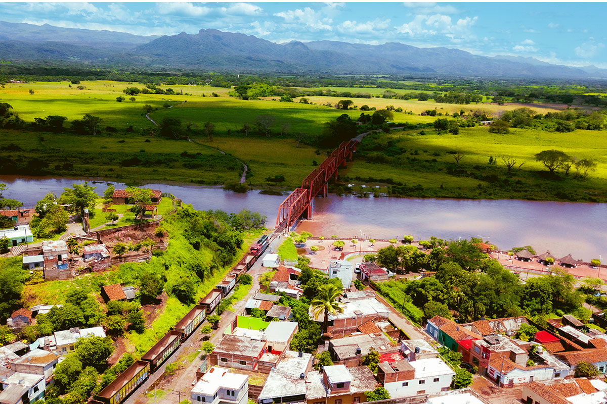
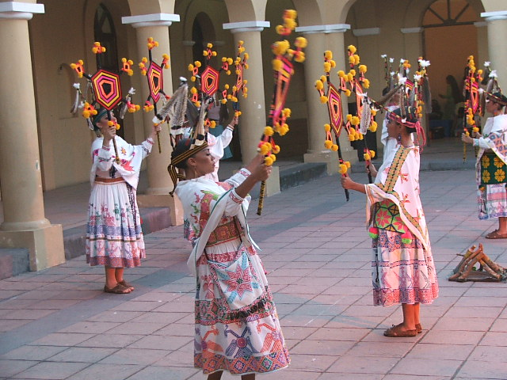
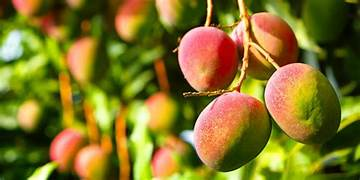

Acaponeta es un municipio situado en el norte del estado de Nayarit, México. Limita al norte con el estado de Sinaloa y al sur con los municipios de Tecuala y Rosamorada.
Entre las fiestas más importantes de Acaponeta se encuentra la celebración de la Virgen de la Asunción, patrona del lugar, que se festeja el 15 de agosto. También destacan los carnavales y ferias locales con música, danza y gastronomía típica.
La economía de Acaponeta se basa en la agricultura, destacando la producción de maíz, frijol, chile, mango y plátano. También se practican actividades ganaderas y comerciales.
